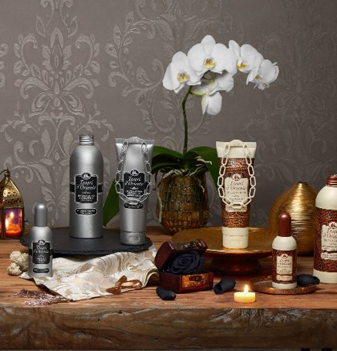

Registrazione Newsletter

Aegyptus
L'essenza dei re
Gli antichi egizi amavano la bellezza e dedicavano molto tempo e attenzione alla cura del proprio corpo. Erano profondi conoscitori dei cosmetici e dei profumi e affinarono la loro tecnica nella produzione delle fragranze ad altissimi livelli. I profumi rivestivano un ruolo di primaria importanza: erano un tramite tra gli uomini e gli dei. Essi venivano utilizzati durante le cerimonie e i rituali religiosi, ma anche come strumento di seduzione.
Ayurveda
Il rituale dell'armonia
Nata in India 5000 anni fa, è uno dei trattamenti salutistici più completi basato sulla ricerca dell’equilibrio interiore, ingrediente essenziale per raggiungere il benessere e la bellezza in modo naturale. Nasce così un nuovo rituale di benessere per rigenerare corpo e mente e ritrovare la propria armonia interiore, che si ispira agli ingredienti e ai profumi di questa meravigliosa storia millenaria.
Byzantium
Il rituale dell'oro
Un viaggio immaginario nella leggendaria città di Bisanzio, l’attuale Instabul, tra i suoi sontuosi palazzi illuminati da riverberi d’oro e pietre preziose e pervasi da profumi provenienti dai fiori più rari e da resine pregiate. La corte imperiale di Bisanzio è da sempre considerata un’inesauribile fonte di ispirazione per i decori dei palazzi, i mosaici e i preziosi gioielli, nonché per aver diffuso in tutto l’Occidente le antichissime tecniche di profumeria ed esclusivi rituali di bellezza.
Orchidea Imperiale
Il rituale dei sensi
Un rituale inebriante, per lasciarsi coccolare dai dolci e vellutati effluvi dell’Orchidea della Cina e regalarsi una pelle morbida come la seta.
Fiore del Dragone
Il tesoro dell'imperatore
Una passeggiata notturna tra i dolci effluvi dei giardini asiatici, dove bellezza e natura sono da sempre in perfetta armonia, per lasciarsi inebriare dal profumo, intenso e ammaliante, del Fiore del Dragone. Un rituale dal benefico effetto rigenerante, arricchito con estratto di Pitaya utilizzato fin dall’antichità nella preparazione di prodotti cosmetici per le sue virtù tonificanti.
Fior di Loto
Il rituale degli Dei
I Fiore di Loto ha da sempre affascinato la cultura orientale, per la sua particolarità di affondare le radici nella terra, distendersi sulla superficie delle acque stagnanti uscendo da esse immacolato e bellissimo. Il suo inebriante profumo accarezza i sensi, regalando un piacevole benessere che resterà a lungo sulla pelle e nella mente
Forest Therapy
Il profumo del benessere
Il Forest Bathing, letteralmente “Bagno nella Foresta”, è un rituale di benessere giapponese che prevede una rigenerante immersione nelle foreste per assimilarne tutti i benefici in un ambiente puro e incontaminato.
È stato dimostrato che trascorrere tempo all’aria aperta, nelle foreste e nei boschi, aiuta a risvegliare i nostri sensi, allontana lo stress e rafforza le difese immunitarie.
Hammam
Un rituale mistico
Ispirata ad uno dei più antichi rituali di pulizia, la linea Hammam è stata pensata per regalarti l’esperienza unica di un vero trattamento di bellezza e benessere a casa tua. L’olio di Argan è da sempre utilizzato nel campo della bellezza, in virtù delle sue straordinarie proprietà antiossidanti, emollienti e idratanti. L’estratto dei Fiori d’Arancio, dal profumo raffinato e prezioso, è sapientemente miscelato con Gelsomino Sambac e oli essenziali di Clementina, dando vita così a una fragranza inconfondibile.
JAPANESE SPA
L’antico rituale del bagno giapponese
L’antico rituale del bagno giapponese, dedicato alla purificazione del corpo e delle mente che prevede l’immersione in acqua calda dopo un’attenta e accurata pulizia. Un rito che segue precise gestualità per regalarsi un momento di profondo piacere e ritrovare una pelle morbida, distesa e luminosa. Lo scopo è infatti quello di purificarsi e rilassarsi, liberandosi dello stress quotidiano.
Karma
Il rituale del buon umore
Un viaggio da sogno in una terra poco conosciuta, alle pendici del monte Himalaya, il Buthan, è considerato «Il Paese più Felice del mondo». La pace e la serenità sono assolute protagoniste della vita dei suoi abitanti. Per ricreare tale condizione di benessere i nostri maestri profumieri hanno creato una fragranza dagli effetti benefici per la mente in grado di rilassare, e donare buon umore ed energia.
Sandalo del Kashmir & Vetiver
Il rituale della vitalità
Il diario olfattivo di un viaggio alla scoperta di una misteriosa isola immaginaria, ricca di fascino e segreti da svelare. Una fragranza che evoca la freschezza di prorompenti cascate nella natura, immense foreste selvagge, per regalare una rigenerante sensazione di benessere.
Mirra
L'essenza di mille e una notte
Sin dalla notte dei tempi, la Mirra è considerata un dono esclusivo, un piacere dei sensi riservato ai re e ai rituali sacri più importanti. Preziosissima, molto più rara degli incensi, è la protagonista di questo rituale dalle virtù rigeneranti.
Muschio Bianco
Il profumo dell'Eden
Un rituale per immergersi in un mondo fatto di armonia e seduzione, per lasciarsi abbandonare alle suggestioni ambrate e armoniose del sublime profumo del Muschio Bianco. I suoi effluvi, resi unici da un’infusione con le essenze più preziose, donano una sensazione di profondo benessere.
Persian Dream
Il rituale da mille e una notte
Un viaggio onirico nell'antica Persia, sede di una delle più antiche civiltà del mondo, tra i suoi sontuosi palazzi finemente decorati, i cortili inondati di luce e i lussureggianti giardini, pervasi da inebrianti profumi e dai rilassanti gorgoglii delle mille fontane.
In persiano, la parola "Pairidaeza" significa sia paradiso che giardino. Proprio per la loro maestosa bellezza, i giardini persiani hanno ispirato sin dall'antichità arti e tradizioni della cultura orientale, nonché la scienza della profumeria.
I persiani furono i primi a creare profumi e a scoprire la tecnica della distillazione delle essenze.
Royal Oud
Il rituale del fascino e del mistero
Un viaggio olfattivo nell’affascinante regione dello Yemen, tra cieli stellati, atmosfere calde e avvolgenti e fragranze inebrianti che profumano l'aria, alla ricerca di uno dei profumi più pregiati dalla notte dei tempi: l’Oud o Agarwood. Chiamato anche “oro liquido” o “legno degli Dei”, l’Oud è un’essenza rara e preziosa, estratta dalla resina di un albero della famiglia dell’Aquilaria, utilizzato da sempre nelle cerimonie sacre orientali ed il simbolo per eccellenza della ricca tradizione olfattiva della civiltà araba.
Thalasso Therapy
Il rituale della purezza
Dal greco THALASSA = MARE e THÉRAPEIA = TRATTAMENTO
La talassoterapia è un trattamento naturale che sfrutta le proprietà benefiche dell'acqua di mare e del clima marino, per rigenerare il corpo e donare un profondo benessere allo spirito. Il termine fu coniato per la prima volta in Bretagna nel diciannovesimo secolo, sebbene gli effetti salutari dell'acqua fossero noti fin dall'antichità.
In effetti, per la maggior parte delle culture orientali, l'acqua è sempre stata una fonte di ispirazione, nonché una parte essenziale e preziosa della vita, un elemento che collega mente, corpo e spirito.
Vaniglia & Zenzero
Il rituale delle spezie
Un avventuroso viaggio lungo la rotta delle Indie Coloniali, alla scoperta degli aromi e delle spezie più pregiate. Un rituale arricchito con il prezioso olio di Macadamia, dalle proprietà idratanti ed emollienti, per lasciare la pelle meravigliosamente morbida e profumata.